Junto al río Vardar 1
- Producción
- UFUŽ y Cine Documental Praga
- Guion y dirección
- Slavko Janevski y EMAN CANERA
- Año
- 1959
- Duración
- 00:26
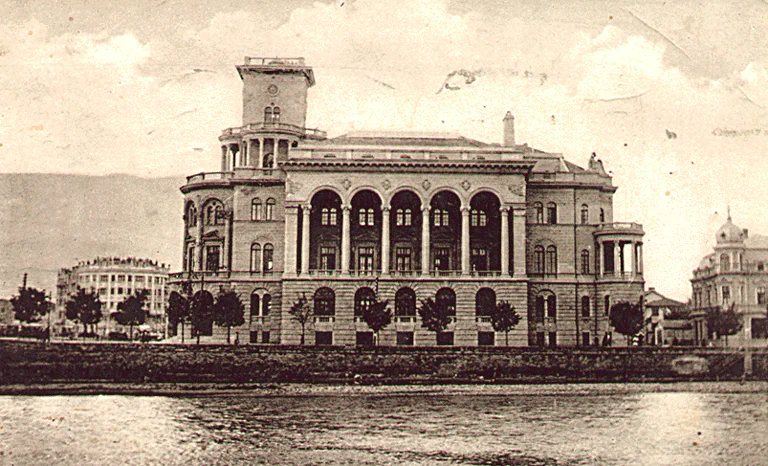
En la margen derecha del Vardar, junto al puente de piedra, en el antiguo solar de la mezquita Burmali, estaba el Casino de Oficiales. Se construyó entre 1926 y 1929 según el proyecto del arquitecto Wilhelm Baumgarten, en el estilo del academicismo clásico, sobre todo en la fachada con columnas colosales y en los vanos de las ventanas. Sobre la entrada principal había una torre con relojes en sus cuatro caras

El salón de actos del Casino de Oficiales, donde se celebraban bailes. Al fondo del salón se ve la galería. Estaba decorado con preciosas lámparas de cristal, columnas corintias adosadas y logias en las ventanas
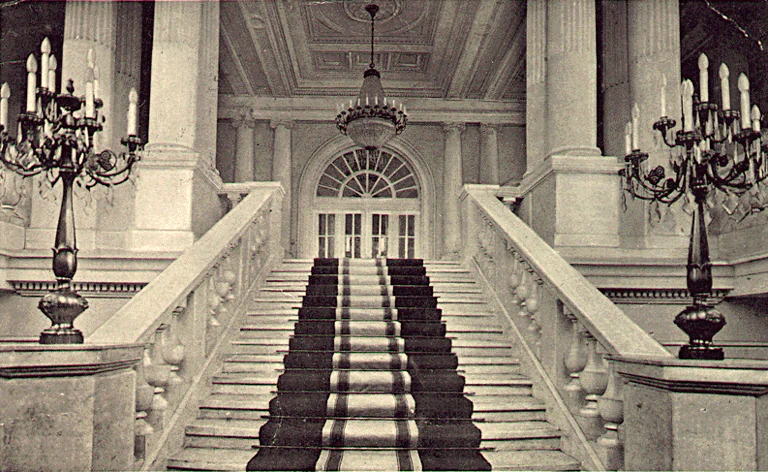
La entrada al salón de actos del Casino de Oficiales. A izquierda y derecha la escalera está adornada con candelabros metálicos, y el techo tenía decoración en relieve.

Casino de Oficiales - de noche - años 1920.
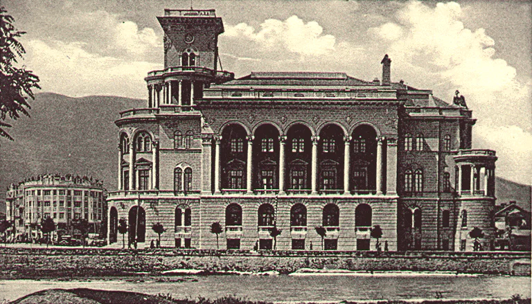
Casino de Oficiales - años 1920.
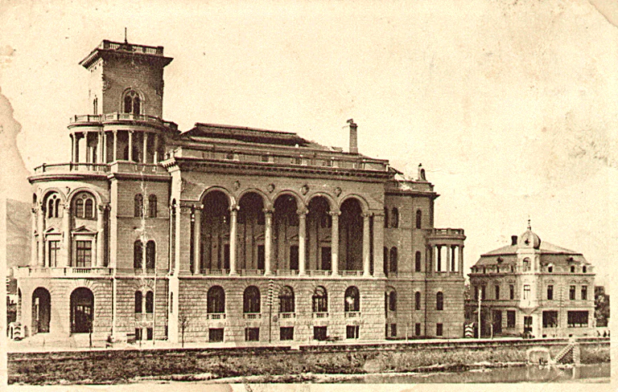
Casino de Oficiales - años 1920.
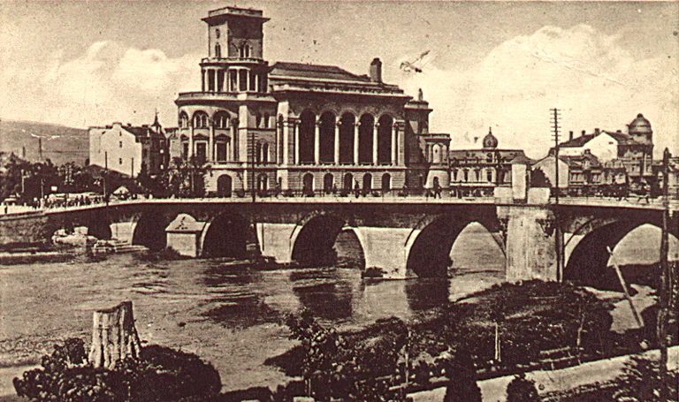
El puente de piedra y el Casino de Oficiales - años 1920.
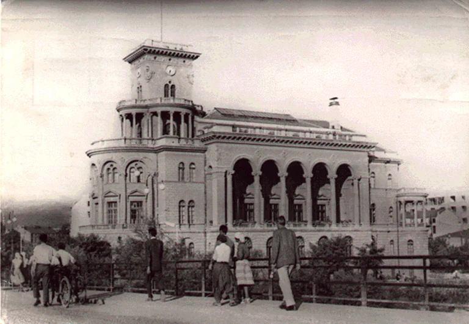
Casino de Oficiales - años 1920.
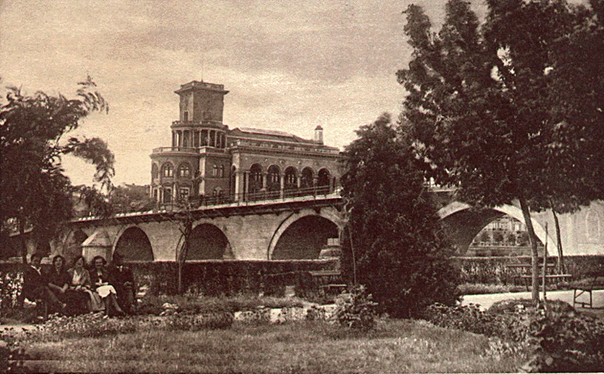
La placita de la margen izquierda del Vardar, con parte del paseo. Al fondo, el puente de piedra y el Casino de Oficiales - años 1920.

Casino de Oficiales - años 1920.
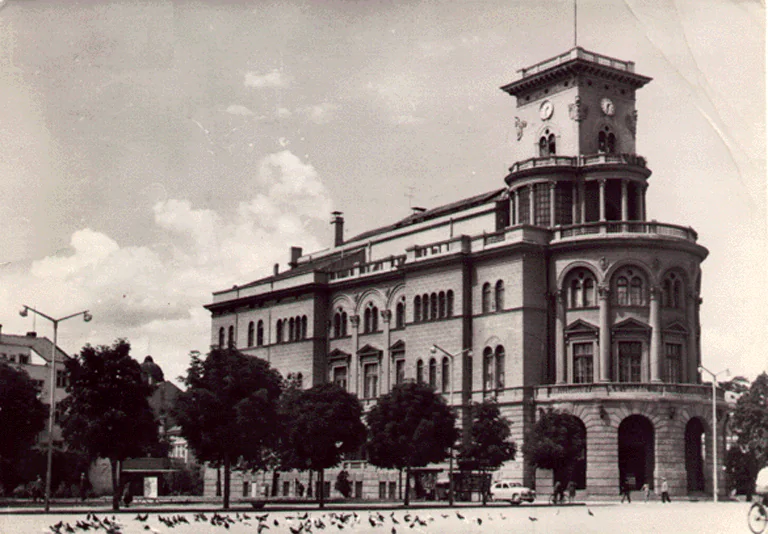
Casino de Oficiales - años 1920.
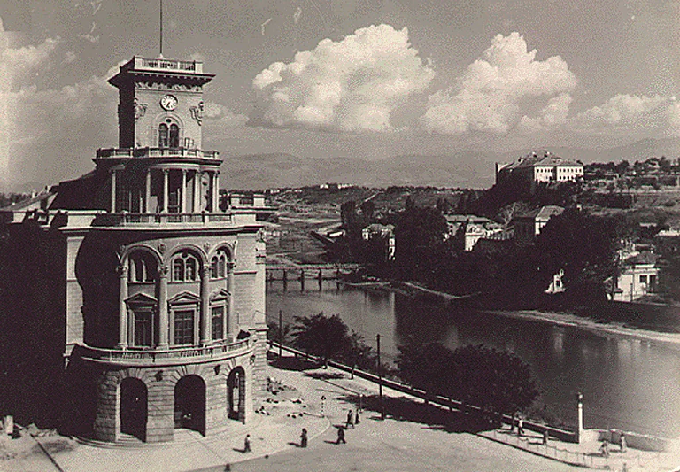
Casino de Oficiales - años 1920.

Casino de Oficiales - años 1920.

El Casino de Oficiales. Al fondo se ven el Teatro Nacional y parte de la fortaleza de Skopie - Kale.
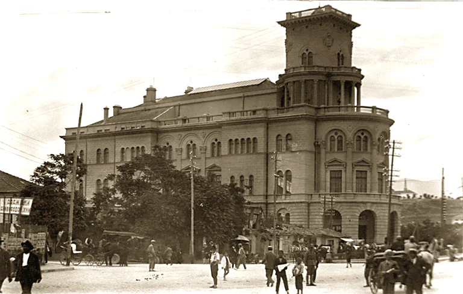
Casino de Oficiales - años 1920.
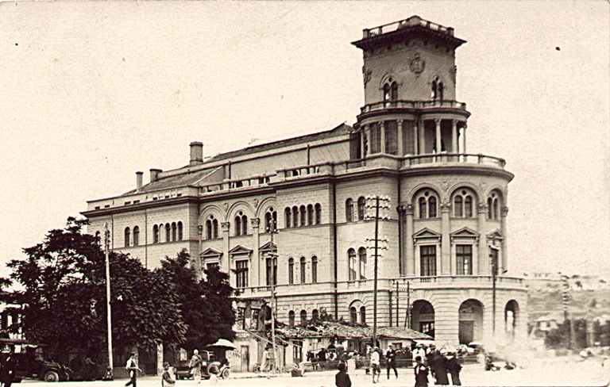
Casino de Oficiales - años 1920.
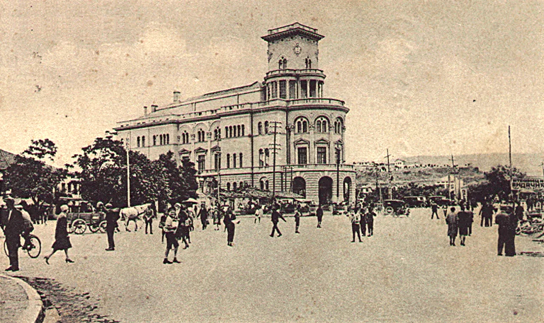
El Casino de Oficiales y la plaza «Makedonija» - años 1920.
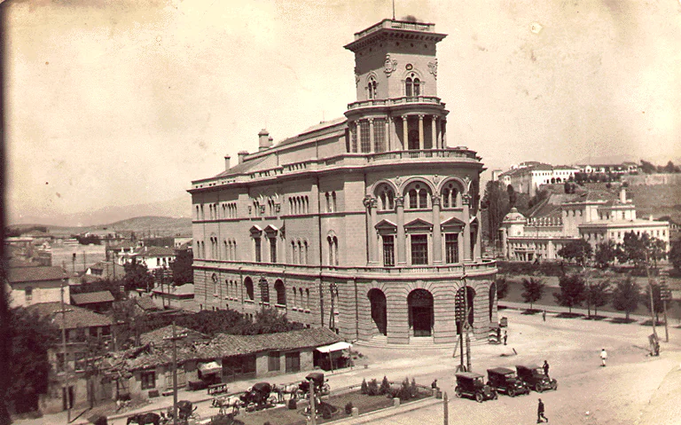
El Casino de Oficiales y parte de la plaza «Makedonija». Al fondo se ven el Teatro Nacional y parte de la fortaleza de Skopie - Kale - años 1920.
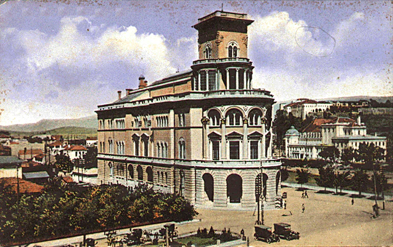
El Casino de Oficiales y parte de la plaza «Makedonija». Al fondo se ven el Teatro Nacional y parte de la fortaleza de Skopie - Kale - años 1920.

Casino de Oficiales - años 1920.
Casino de Oficiales - años 1920.
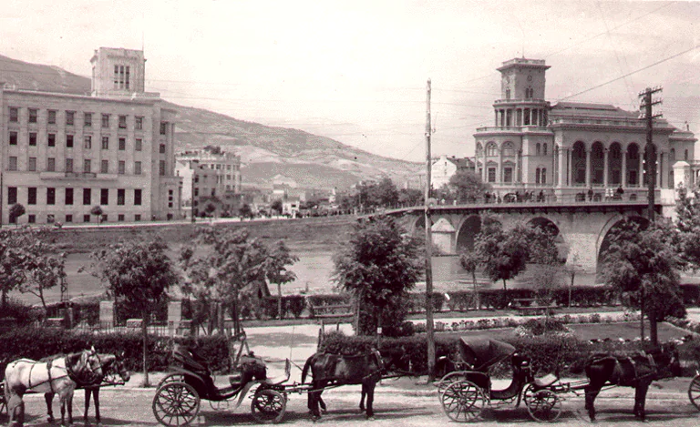
El Banco Nacional con el Casino de Oficiales y el puente de piedra. La foto se tomó desde la margen izquierda del Vardar, desde la placita donde paraban los coches de caballos. (años 1930)

Una parte de la plaza con el Casino de Oficiales - años 1930.
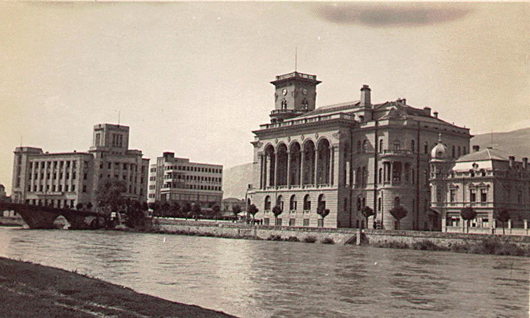
El Casino de Oficiales con el Banco Nacional - años 1930.

El Casino de Oficiales, el Banco Nacional, el puente de piedra y la plaza «Makedonija» - de noche - años 1930.

El Casino de Oficiales con el Banco Nacional - años 1930.
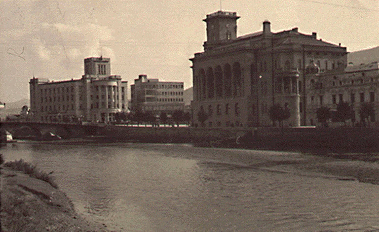
El Casino de Oficiales con el Banco Nacional - años 1930.

El Casino de Oficiales - años 1930.
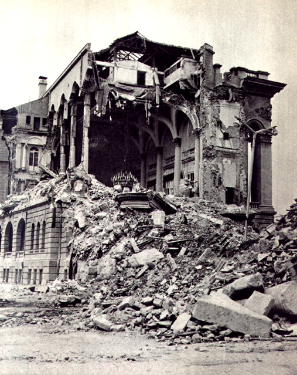
El Casino de Oficiales el 26 de julio de 1963.

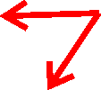


 Acueducto4 postales
Acueducto4 postales Kale30 postales
Kale30 postales Puentes60 postales
Puentes60 postales Malecón58 postales
Malecón58 postales Plaza46 postales
Plaza46 postales Edificios66 postales
Edificios66 postales Templos cristianos19 postales
Templos cristianos19 postales Edificios musulmanes33 postales
Edificios musulmanes33 postales Casino de Oficiales29 postales
Casino de Oficiales29 postales Teatro28 postales
Teatro28 postales Estación de ferrocarril13 postales
Estación de ferrocarril13 postales Escuelas36 postales
Escuelas36 postales Parques12 postales
Parques12 postales Mercados18 postales
Mercados18 postales Calles38 postales
Calles38 postales Panorama I60 postales
Panorama I60 postales Panorama II30 postales
Panorama II30 postales Collages55 postales
Collages55 postales Inundaciones9 postales
Inundaciones9 postales Terremoto27 postales
Terremoto27 postales Skopie 200026 postales
Skopie 200026 postales